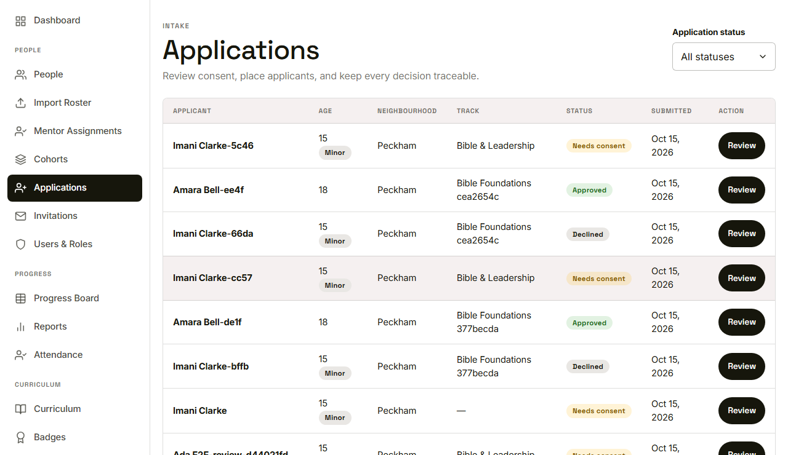
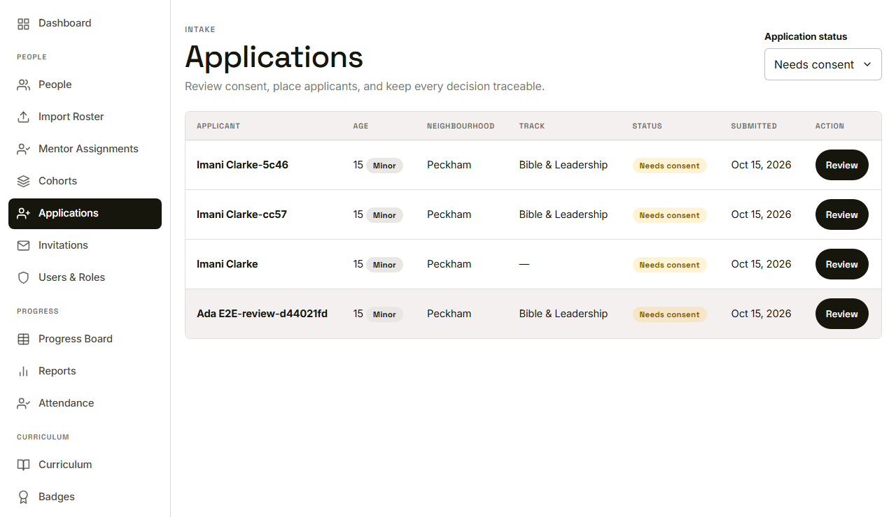
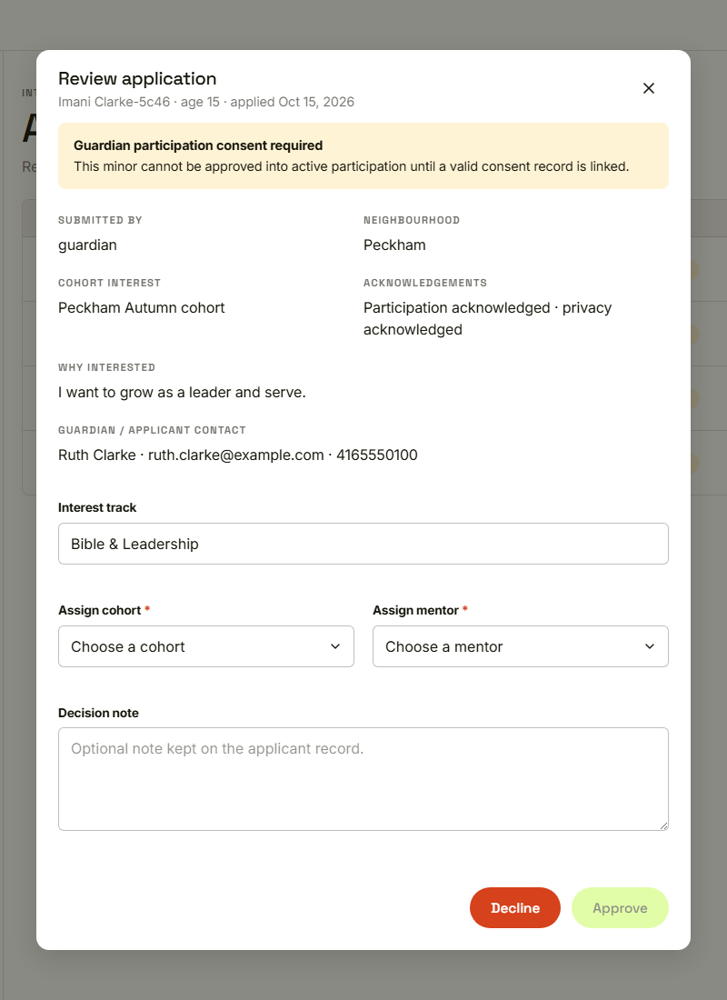

Waypoint · Video 021
Reviewing an application
One queue, everything submitted, nothing decided yet
One queue for every application

A row for each application, with a status badge
Filter by status

Needs consent shows minors awaiting guardian consent
Everything the applicant submitted

Consent notice, submitted details and decision fields
Things to remember
- Every application lands in one queue
- The status filter narrows to what needs attention
- The review shows exactly what was submitted
- Opening a review decides nothing